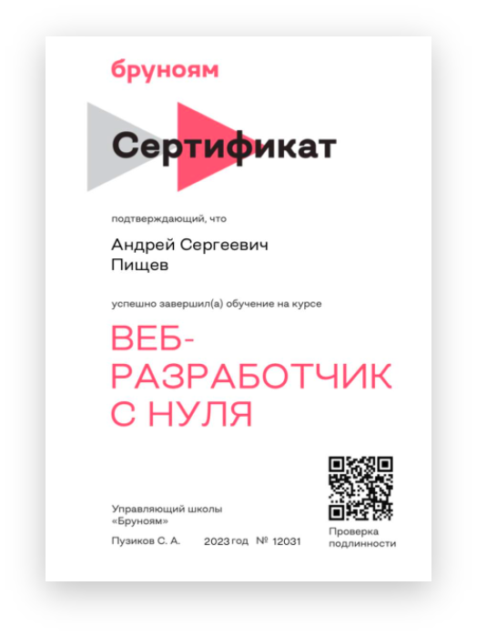

Андрей
Привет! На сайте разместил информацию о себе и моих проектах в веб-дизайне, верстке. Основная цель — показать портфолио начинающего веб-разработчика. Мне нравиться работать с кодом, разбираться как построен процесс, его логику.
Адаптация
Изображения, графика, текстовые блоки. Буду расставлять так, чтобы было комфортно пользоваться.
Верстка макетов
Стараюсь придерживаться семантической, валидной верстки, с использованием общепринятой методологии.
Любовь
На данный момент я понимаю, что люблю это дело и собираюсь в нем разбираться
WEB-design
Вроде бы умею разбирать визуальную составляющую макета, композицию)
Мои оценочки
Создание дизайна
80%
Общение
90%
Ув-ув-уверенность
100%
Интерес
100%
Профессионализм
60%
Креативность
90%
Диплом
Я получил среднее профессиональное образование по специальности сварщик. Однако поработав в этой сфере некоторое время, понял, что это не то, чем я хотел заниматься всю жизнь, и начал искать свою истинную страсть. Несколько месяцев назад я увидел видео о программировании на Python, попытался разобраться в нем хоть немного и сделал свою первую игру змейку, скопировав код с видео. Хоть это и была копия, но я был сильно заинтересован. Поэтому я принял решение изучать язык программирования JavaScript и теперь становлюсь на путь истинного джуна.
Стек
<
HTML
CSS
JavaScript
TypeScript
React
Figma
Wordpress
GitHub
>
PODSTAY
Это учебный проект "PodStay", когда я его готовил, я был полностью в него погружен,
надеюсь у меня он получился)
Ссылку на Git найдете ниже...
BLESSED
Этот проект я сделал в самом начале своей деятельности) я просто брал и повторял все с видео и вставлял свои картинки, но за то был нереальный кайф, когда я сделал его. К СОЖАЛЕНИЮ ФАЙЛ УТЕРЯН ТАК КАК Я ЕЩЕ НЕ ЗНАЛ ЧТО ОН МНЕ ПОНАДОБИТЬСЯ, ДА И О GitHub Я НЕ ЗНАЛ(